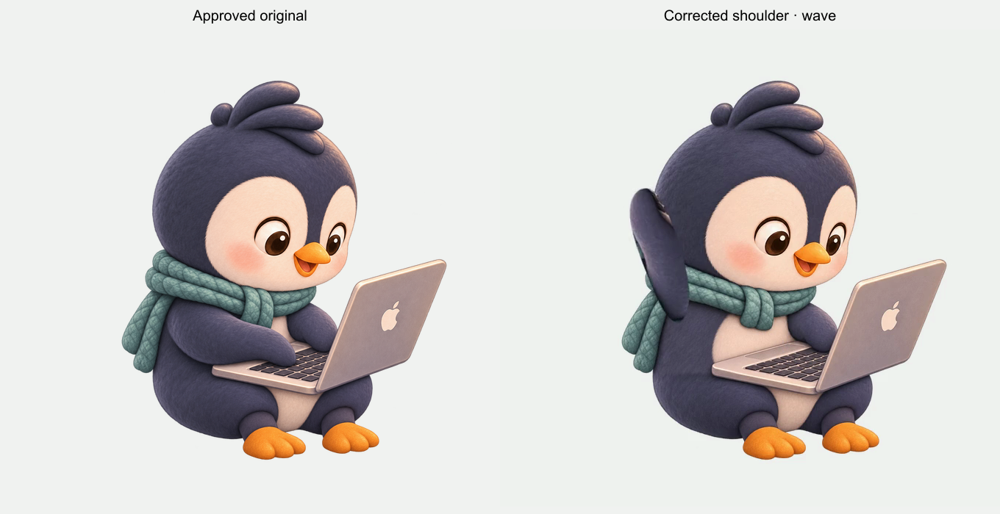

3 seconds. Independent flipper lift, three waves, return. Textured torso repair removes the duplicate-arm patch. Gaze and blinking are still unchanged.
MP4 · Editable Lottie JSON · Original comparison
